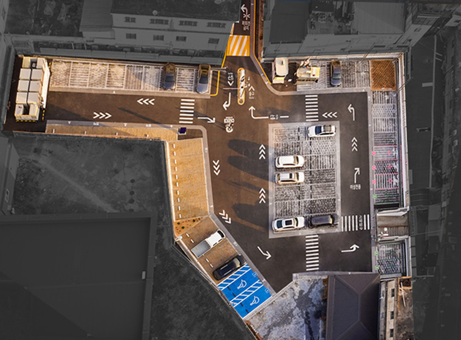
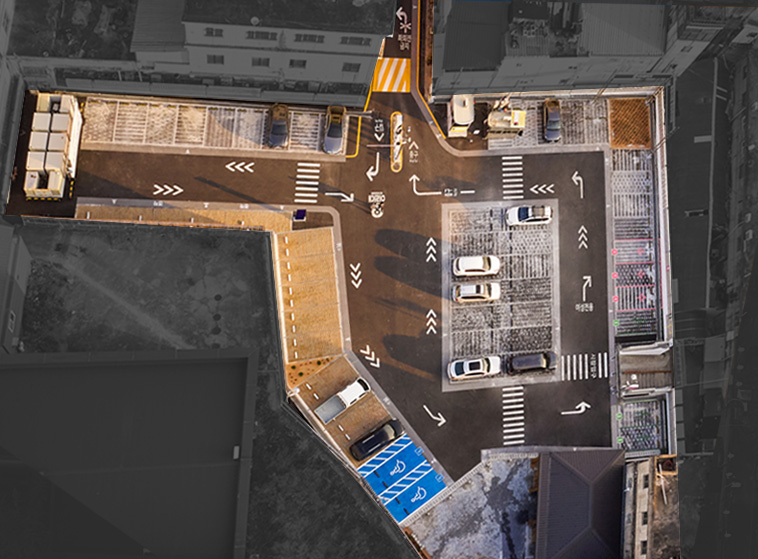

01
첫번째:
잃어버린 ‘이리’시대의 영광

“한때는 바글바글해서 밟히는 게 사람이었단게”
광복후인 1947년, 전북 익산 창인동에 중앙시장이 개장했다. 호남선인 익산역 인근에 있어 오가는 사람이 많았다. 장사가 잘돼 1977년 2짜리 새 건물이 들어섰다.
그해 이리역 폭발사고로 역 근처 창인동(당시 북창동과 철인동) 피해가 제일 컸는데 시장도 2층 슬레이트 지붕이 완파됐다.
그래도 그후 수십년동안 중앙시장은 익산 상권의 중심지로 기능했다. 남북으로 길게 뻗은 중앙시장 건물을 따라 주변 상권도 길쭉하게 형성됐다. 지금은 중앙시장, 매일시장, 서동시장으로 나뉘었지만, 예전에는 그 일대가 모두 ‘중앙시장’으로 불렸다.
토박이 주민이자 상인 이승호씨(71)는 “사람도 많고 노점도 많아서 돌아다니기도 힘들 정도였다. 바글바글해서 밟히는 게 사람이었다”고 했다.

인터뷰 영상 전체 보러가기
“계단에서도 할머니들이 콩나물을 팔 정도였어. 하루에 여섯통, 일곱통씩 팔고 그랬어. 2층은 방앗간, 튀밥집 같은 게 많았는데 2층에만 오면 매웁기도 하고, 참기름 냄새도 나고, 여기서 뻥튀고, 저기서 뻥튀고….”
중앙시장의 영광스런 시대는 1990년대에서 멈췄다. 시장 건물 옆에서 채소와 과일을 팔던 원예농협이 이리시 도시계획에 의해 다른 지역으로 옮겼다. 원예농협 자리에는 주차장을 조성해 시장을 더 발전시키겠다는 복안이었다.
1990년대 후반부터 2000년대 중반까지 시장 반경 3km 내에 대형마트가 3곳이 생겼다. 모현동, 영등동 신시가지가 생기면서 구도심 인구도 빠져나갔다. 이씨가 말했다. “이 동네 사람들, 시장에 사는 사람들만으로도 장사가 될 정도였다니까. 근데 지금은 여기 사는 사람들이 없어.”
시장이 위치한 전북 익산시 중앙동의 인구변화추이 그래프 샘플
침체된 중앙시장에 활기를 불어넣을 수 있을까.
한국공예·디자인문화진흥원과 익산시청은 중앙시장에 ‘공공디자인’을 적용하기로 했다. 공공디자인이란 지역 특성과 주민 편의에 맞춰 공공장소와 공공시설물들을 디자인 하는 것을 말한다.
그런데 사업을 진행한 곳이 다름아닌 주차장이다. 주차장 하나 달라진다고 침체된 중앙시장이 조금 나아질 수 있을까. 공공디자인이 적용된 주차장은 과연 어떤 역할을 하게 될까.
02
두번째:
이곳에는 특별한 동아리가 있다

설연휴를 앞두고 있던 지난 2월4일 아침 익산 중앙시장을 찾았다. 주차장은 차 한대 겨우 다니는 일방통행 골목에 있었는데 ‘이리대’라는 주차장 간판이 눈에 띄었다.
‘여기에 차를 대라’는 의미를 익산시의 옛이름 이리를 사용해 표현한 게 재밌었다.
사업 전에는 주차장의 입구를 쉽게 찾을 수 없는 점이 큰 문제였다.

실제로 주차장의 입구를 알리는 표지판은 골목 건물에 설치된 전광 표지판이 전부였는데,
이마저도 다른 시장의 상가 간판들과 생김새가 유사해 달리는 차 안에서 식별이 어렵다는 지적이 많았다.
반대 방향에서 진입할 경우에도 마찬가지였다.
외지인이나 처음 시장을 방문하는 사람들은 ‘아차’하면 주차장의 입구를 지나치기 일쑤였다.
“첨 오는 사람들은 절대 못 찾혀. 그 밤에 껌껌해져봐. 표지판이 안 보인단께.”
공행공 사업팀은 출구에 새로운 표지판과 부설물들을 설치했다.
주차장은 깔끔했다. 아침 일찍 주차를 하고 시장으로 들어가던 손동영씨(84)는 “예전보다 깔끔허니 좋아졌다. 주차공간이 좁았는데 넓어지고 편해졌다”고 했다. 손씨가 차에서 반쯤 차있는 포대를 꺼내 들었다. 기름을 짜러 왔다고 했다.
그를 따라 2층 기름집으로 올라갔다. 기름집 주인은 설 전에는 사람이 줄을 섰는데 언젠가부터 손님이 뜸해졌다고 했다. 이날은 두명의 손님이 와있었다. 그나마 다른데 보다는 장사가 잘되는 편이었다. 2층은 문닫은 곳이 많았다.
이는 정산을 하는 부스의 위치가 출입구 방향 골목이 아닌 주차장 내부로 들어와 있어 차량이 순환할 수 없는 구조에 따른 결과였다.
정산 시스템 또한 유인 방식으로 불편함이 많았다.
주차장의 끝 부분에서 정산 부스 방향으로의 차량 진입을 막는 펜스의 모습.
주차장의 끝 부분에서 정산 부스 방향으로의 차량 진입을 막는 펜스가 설치되어 있었다. 이에 차량들은 출입구 방향으로 가기 위해 들어온 경로로 돌아 나가야만 했다.

50년 된 오래된 시장과 세월을 함께한 만큼, 공사 전 중앙시장의 주차장은 연식이 상당했다. 그러나 가장 큰 문제는 대로변에서 시장의 주차장으로 들어오는 길을 쉽게 찾을 수 없다는 점이었다.
진입을 알려주는 표지판도 식별이 되지 않아 외지인이나 처음 시장을 방문하는 사람들은 ‘아차’하면 주차장의 입구를 지나치기 일쑤였다.
50년 된 오래된 시장과 세월을 함께한 만큼, 공사 전 중앙시장의 주차장은 연식이 상당했다. 그러나 가장 큰 문제는 대로변에서 시장의 주차장으로 들어오는 길을 쉽게 찾을 수 없다는 점이었다.
진입을 알려주는 표지판도 식별이 되지 않아 외지인이나 처음 시장을 방문하는 사람들은 ‘아차’하면 주차장의 입구를 지나치기 일쑤였다.
요금정산기를 무인정산기로 교체하면서 정산기의 위치를 입출구 골목 방향으로 이동시켰다. 이후 기존에 있던 펜스를 치워 주차장의 끝에서 다시 입출구로 돌아갈 수 있는 순환구조로 개선했다.

03
세번째:
사람, 보행자 중심으로
기존의 주차장은 보행자와 차량의 이동 동선이 구분되어 있지 않아 사고가 발생하기 쉬웠다.
이 공간을 처음 마주한 박성진 디렉터는 ‘무척 위험해보였다’고 회상했다. 박성진 디렉터는 도시 공간을 기획, 설계하는 일을한다.


기존의 중앙시장 주차장은 주차장을 들어오는 차량과 나가는 차량, 좁은 공간을 T자로 회차하는 차량과 보행자가 뒤엉킨 공간이었다.
박성진 디렉터가 이를 해결하기 위해 도입한 것이 순환 출차체계다. 로터리의 개념처럼 입차, 회차 차량이 주차장 내의 순환되는 큰 원형 길을 따라 따라 자연스럽게 이동하면서 차량의 동선이 정리된다.
동선이 정리되면 주차장에서 보행자도 안전해진다. 보행자가 느끼는 위협감, 그리고 운전자들이 차를 주정차할 때 직면하게 되는 여러 가지 위험한 상황들, 이런 것들을 최소화 하려는 노력이 반영된 결과다.

주차장 내의 영역도 재구성했다. 시장을 방문하는 특정 시간대가 끝나면 주차장이 한산해지는 시간대가 있는데, 그 유효시간대에는 새로운 이벤트가 열릴 수 있는 공간들을 확보했다.
그 지역사회나 지역문화의 거점으로서 작동할 수 있는 가능성을 발견한 셈이다.

인터뷰 영상 전체 보러가기
04
네번째:
주차장이 변하자 시장이 변했다
12월 22일에는 상인회에서 ‘음악회’를 열었다. 주차장 옆으로 새로 마련된 공연장에서 비대면으로 음악회가 열렸다.시장 상인들과 익산의 다문화 가구에서 많은 참여가 있었다.
그 지역사회나 지역문화의 거점으로서 작동할 수 있는 가능성을 발견한 셈이다.
 

전북 익산 중앙시장 주차장 공사 전후 모습


전북 익산 중앙시장 화장실공간 공사 전후 모습
주차장 내의 영역도 재구성했다. 시장을 방문하는 특정 시간대가 끝나면 주차장이 한산해지는 시간대가 있는데, 그 유효시간대에는 새로운 이벤트가 열릴 수 있는 공간들을 확보했다.
그 지역사회나 지역문화의 거점으로서 작동할 수 있는 가능성을 발견한 셈이다.

로터리에는 보행자 횡단 보도가 새로이 설치됐다. 보행자와 차량의 동선이 정리되면서 사고의 위험이 줄어들었다.

화장실은 새롭게 인테리어를 단장했다. 바로 앞 공간으로 사람들이 모여서 담소를 나눌 수 있는 공간이 마련됐다.

화장실은 새롭게 인테리어를 단장했다. 바로 앞 공간으로 사람들이 모여서 담소를 나눌 수 있는 공간이 마련됐다.

마무리 텍스트. 1년 간의 공사 기간을 마치고 새로 탄생한 중앙시장에는 예전보다 많은 주민들이 찾아오고 있다.
가장 큰 변화는 무엇 하다는 것이다. 변한 것은 주차장 뿐이지만, 이것이 시장으로 사람들을 모았고, 주민들의 삶을 변화시켰다. 우리의 삶에 더 좋은 공간, 디자인이 필요한 이유다. 등등.
마무리 텍스트. 1년 간의 공사 기간을 마치고 새로 탄생한 중앙시장에는 예전보다 많은 주민들이 찾아오고 있다.
가장 큰 변화는 무엇 하다는 것이다. 변한 것은 주차장 뿐이지만, 이것이 시장으로 사람들을 모았고, 주민들의 삶을 변화시켰다. 우리의 삶에 더 좋은 공간, 디자인이 필요한 이유다. 등등.